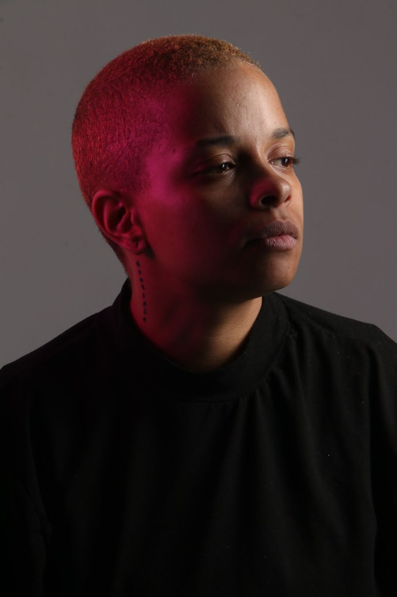
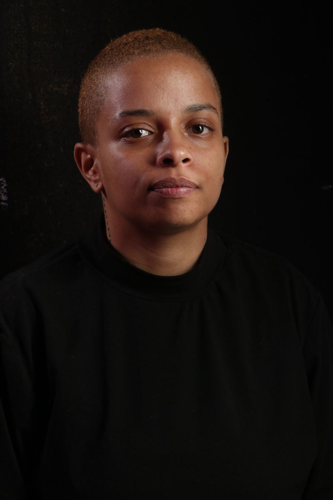
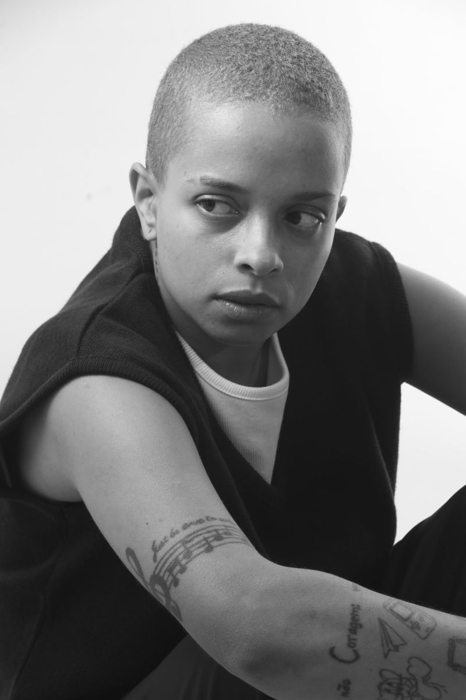
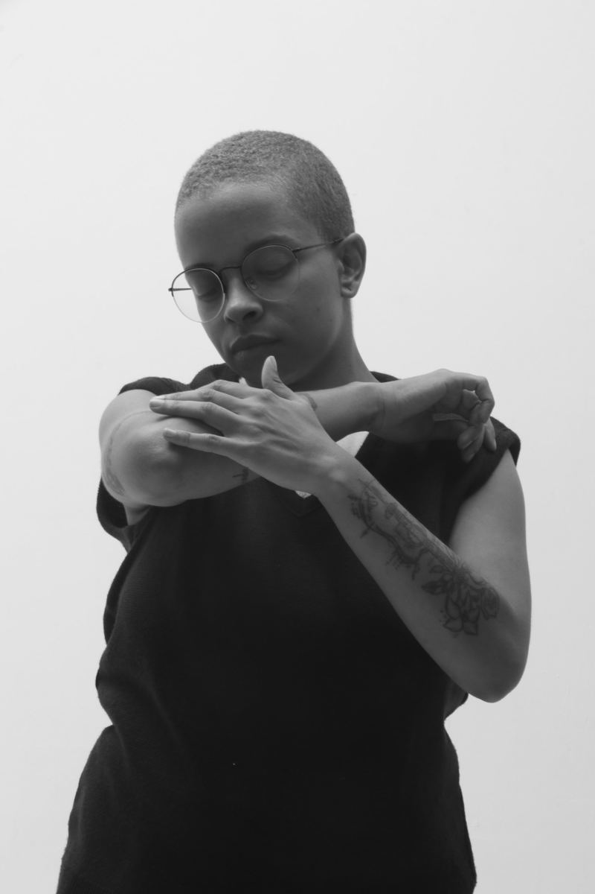
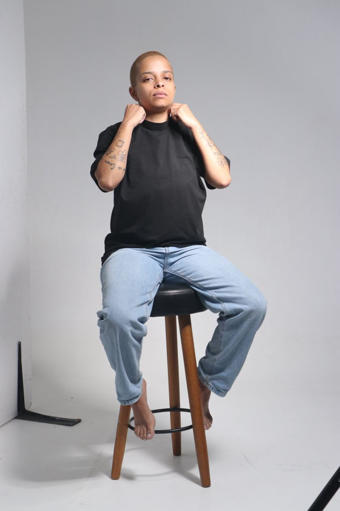
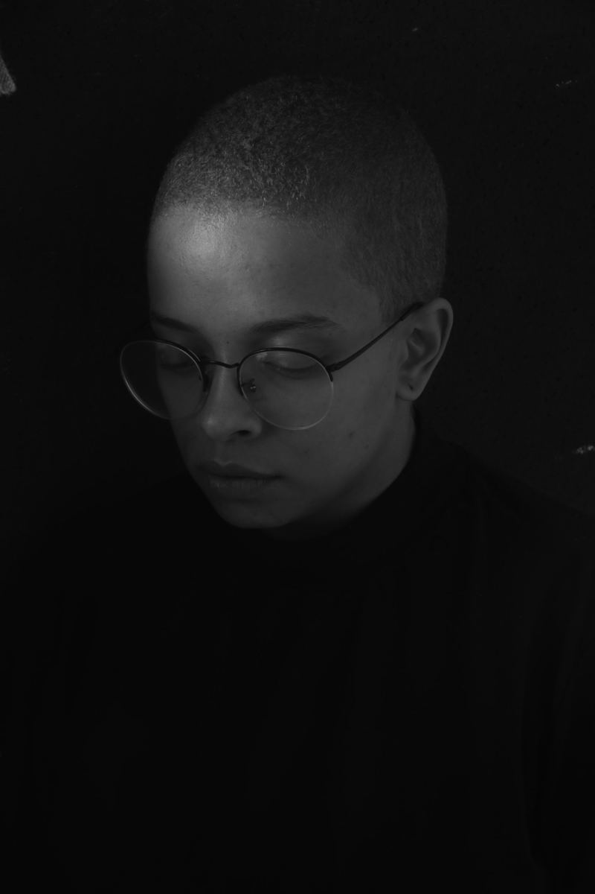
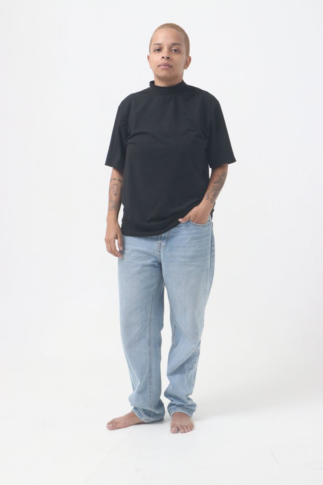

Te amo, VóCinema
Curta universitário. Atuação ao lado de Maria Aparecida.

Atriz e Assistente de Direção com 6 anos de trajetória e experiência em diversos espetáculos teatrais, entre adaptações livres e obras autorais.
Hoje investe em conhecimentos no audiovisual e explora o universo da dança.
Curta universitário. Atuação ao lado de Maria Aparecida.
Assistente de direção e produção. Direção de Diogo Guermandi e Eber Rodrigues.
Coro. Direção de Eduardo Stefano e JB Oliveira. Coletivo Na Cena, em festival na Galeria Olido.
Comissão de frente. Direção de Ale Batista, no Sambódromo do Anhembi. Campeã do Grupo de Acesso 2 do Carnaval de São Paulo.
Corpo de dança. Direção de Rodney Elias, no Teatro Curso Ator (L&J Produções). Espetáculo de dança sobre danças brasileiras em contexto colonialista.
Espetáculo de improviso em que o público sugere os temas dos jogos. Direção de Diogo Guermandi e Mariana Lopes, no Festival Satyrianas.
Raiva. Direção de Georgia Avila e Mariana Lopes.
Marlene, a carimbadora. Criação coletiva com direção de Diogo Guermandi e Mariana Lopes: monólogos de 10 minutos, repetidos 10 vezes para públicos diferentes.
Conheça meu trabalho em poucos minutos.
Cena de atuação com Maria Aparecida.
Comédia.
Drama. Direção de Heitor Martinez e Ricardo Conti, texto de Ricardo Conti.
Romance. Direção de Heitor Martinez e Ricardo Conti, texto de Ricardo Conti.
Trecho do espetáculo de teatro.






Para testes, convites e projetos, fale comigo ou com meu agente.
Chamar no WhatsApp